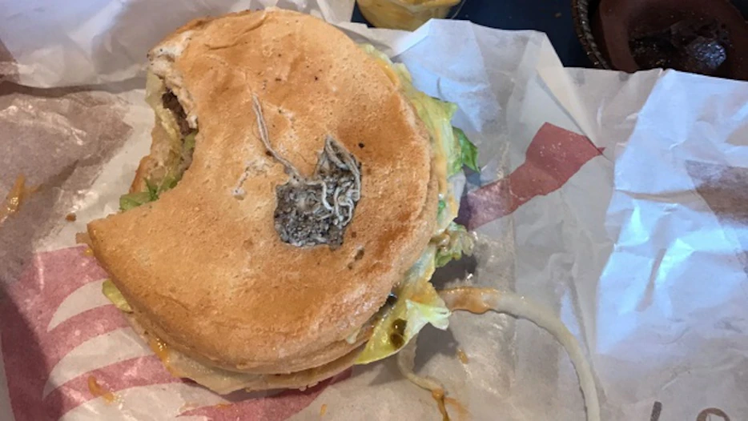
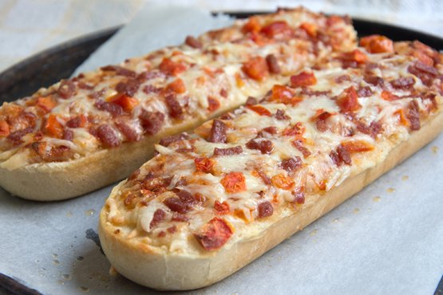
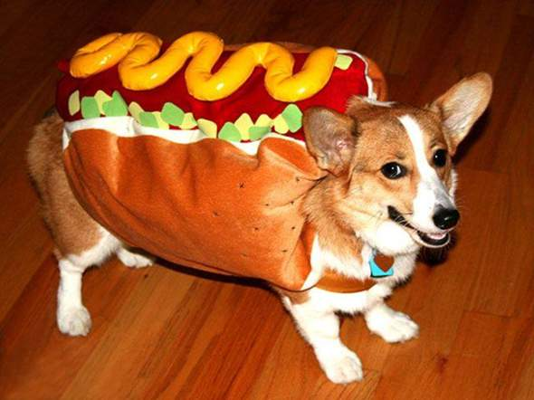

Landungsseite
Die Schulkantine der HTL Waidhofen wird von Frau Maria Ettlinger und ihrem Team geführt. Pünktlich um 7 Uhr werden täglich die Rollbalken geöffnet und dem Kauf eines super-nahrhaften HTL-Schüler-Frühstücks mit Pizzaschnitte und viel Ketchup steht nichts mehr im Weg! Für die Süßen und die Ernährungsbewussten gibt es ebenfalls ein umfangreiches Angebot. Zu mittags wird gekocht. Neben zahlreichen Snacks werden täglich zwei Menüs angeboten.
Bestseller

Auch Beliebt
Pizzabageutte

Hot Dogs
